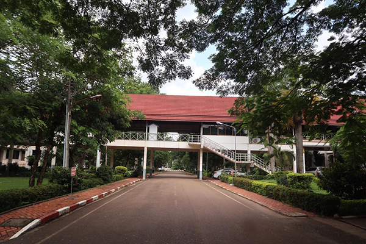

-
ປະຫວັດຫຍໍ້ ມຊ
ມະຫາວິທະຍາໄລແຫ່ງຊາດ (ມຊ) ເປັນມະຫາວິທະຍາໄລເຕັມຮູບແບບແຫ່ງທຳອິດໃນປະຫວັດສາດຂອງຊາດລາວ ໄດ້ຮັບການສ້າງຕັ້ງຂຶ້ນ ໃນວັນທີ 5 ພະຈິກ 1996 ຕາມດຳລັດຂອງນາຍົກລັດຖະມົນຕີ ສະບັບເລກທີ 50/ນຍ, ລົງວັນທີ 09/06/1995, ໂດຍການເຕົ້າໂຮມເອົາບັນດາສະຖາບັນການສຶກສາຊັ້ນສູງ ເຊິ່ງເມື່ອກ່ອນຂຶ້ນກັບຫຼາຍກະຊວງ ເຂົ້າເປັນມະຫາວິທະຍາໄລແຫ່ງຊາດ. ບັນດາສະຖາບັນການສຶກສາດັ່ງກ່າວ ປະກອບດ້ວຍ 10 ສະຖາບັນ ຄື: ມະຫາວິທະຍາໄລສ້າງຄູວຽງຈັນ, ມະຫາວິທະຍາໄລສັບພະວິຊາ 2 ທັນວາ, ມະຫາວິທະຍາໄລວິທະຍາສາດສາທາລະນະສຸກ, ໂຮງຮຽນກະເສດຊັ້ນສູງນາບົງ, ໂຮງຮຽນປ່າໄມ້ຊັ້ນສູງດົງໂດກ, ໂຮງຮຽນຊົນລະປະທານຊັ້ນສູງຕາດທອງ, ໂຮງຮຽນກໍ່ສ້າງເຄຫະສະຖານຊັ້ນສູງ, ໂຮງຮຽນຄົມມະນາຄົມຂົນສົ່ງຊັ້ນສູງ, ໂຮງຮຽນການຊ່າງຊັ້ນສູງໄຟຟ້າເອເລັກໂຕຣນິກ ແລະ ສູນກຽມສ້າງຕັ້ງມະຫາວິທະຍາໄລກະສິກຳ-ປ່າໄມ້ເວີນຄຳ.
ນັບແຕ່ນັ້ນມາ ມະຫາວິທະຍາໄລແຫ່ງຊາດ ໄດ້ດຳເນີນວຽກງານການຄຸ້ມຄອງ-ບໍລິຫານແລະ ຈັດການຮຽນການສອນຢ່າງເປັນລະບົບ. ໃນເບື້ອງຕົ້ນ ມຊ ມີ 7 ຄະນະວິຊາ, 6 ຫ້ອງການແລະ ວິທະຍາໄລວິທະຍາສາດພື້ນຖານ. ຈາກນັ້ນມາກໍໄດ້ມີການສ້າງຕັ້ງຄະນະວິຊາ, ສະຖາບັນ, ຫ້ອງການ, ສູນ, ໂຮງໝໍວິທະຍາເຂດ ແລະ ໂຮງຮຽນ ປະຖົມສົມບູນ ແລະ ມັດທະຍົມ ສົມບູນສາທິດ. ມາຮອດສົກສຶກສາ2016-2017 ມຊ ປະກອບມີ 13 ຄະນະວິຊາ, 2 ສະຖາບັນ, 11 ຫ້ອງການ, 1 ຫໍສະໝຸດກາງ, 3 ສູນ,1 ໂຮງໝໍວິທະຍາເຂດດົງໂດກ ແລະ ໂຮງຮຽນພອນສະຫວັນ ແລະ ຊົນເຜົ່າກຽມມະຫາວິທະຍາໄລ.

The National University of Laos (NUOL) is the first comprehensive or full-fledged university in the history of Lao PDR. Since its establishment on November, 5th 1996, in accordance with the Prime Minister’s Decree No. 50/PM, dated June, 9th 1995, the NUOL was established by amalgamation of the existing higher education institutions which were then operated under different ministries. It comprises of 10 institutions namely: the Pedagogical University of Vientiane, Polytechnic University, Medical Science University, Nabong College of Agriculture, Dongdok College of Forestry, Tadthong College of Irrigation, Institute of Architecture, Institute of Transportation, College of Electricity and Electronics and the Centre for Establishment of Veunkham Agro-Forestry University. Initially, the NUOL conducted the teaching and learning-based activities starting with 7 faculties, 6 Offices and one School of Foundation Studies. After that faculties, institutes, Centes and campus hospital 1. Sathit Primary School and Sathit Secondary School were established. Currently, 2016-2017 the NUOL is comprised of 13 faculties, 2 institutes, 1 central library, 3centers, 1 hospital, 11 offices, and 1 School for Gifted and Ethnic Students.

ມະຫາວິທະຍາໄລແຫ່ງຊາດກາຍເປັນສູນກາງການສຶກສາຊັ້ນສູງລະດັບຊາດ ທີ່ມີຄວາມເຂັ້ມແຂງ, ທັນສະໄໝ, ນໍາໜ້າທາງດ້ານວິຊາການ ແລະ ການຄົ້ນຄວ້າວິທະຍາສາດ ແລະ ເຕັກໂນໂລຊີຢູ່ ສປປ ລາວ, ມີມາຕະຖານທຽບເທົ່າກັບພາກພື້ນ ແລະ ສາກົນ, ເປັນບ່ອນກໍ່ສ້າງຊັບພະຍາກອນມະນຸດໃຫ້ມີຄວາມຮູ້, ມີຄວາມສາມາດ, ມີຄຸນສົມບັດ, ຈະລິຍະທໍາ ແລະ ຄວາມສີວິໄລທາງດ້ານຈິດໃຈເພື່ອຕອບສະໜອງນັກວິຊາການທີ່ມີຄຸນນະພາບ ໃຫ້ແກ່ການພັດທະນາເສດຖະກິດ-ສັງຄົມຂອງຊາດ ແລະ ເຊື່ອມໂຍງກັບພາກພື້ນ ແລະ ສາກົນ.